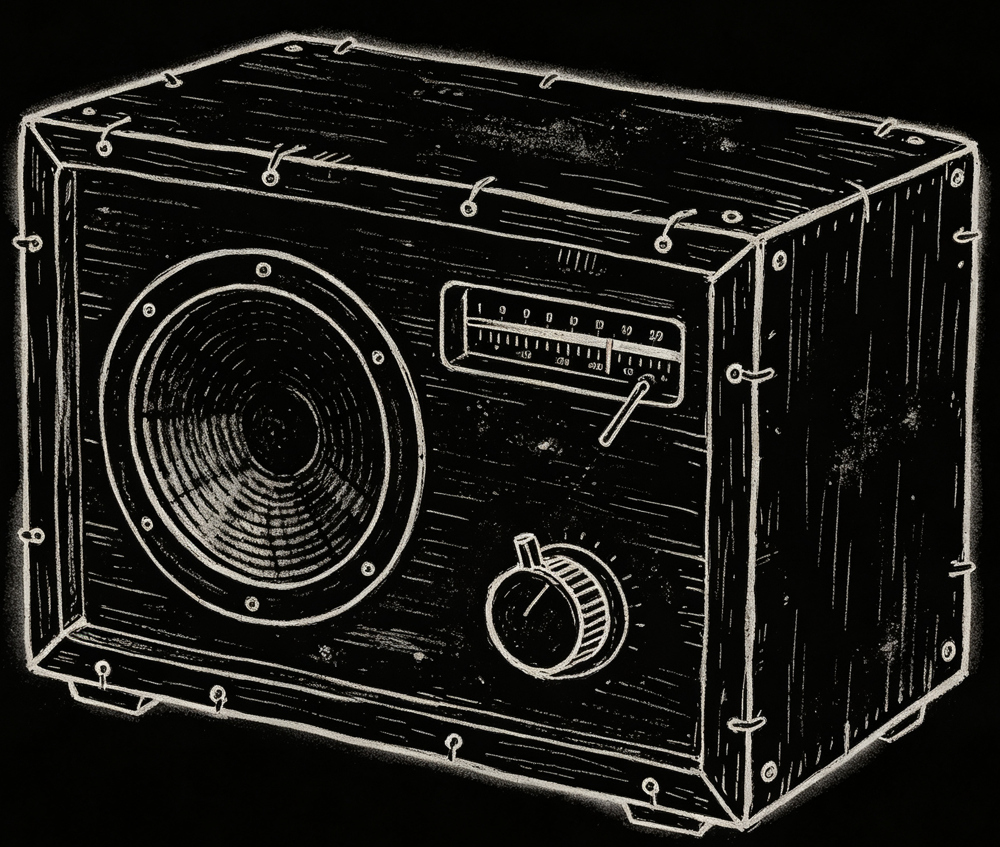
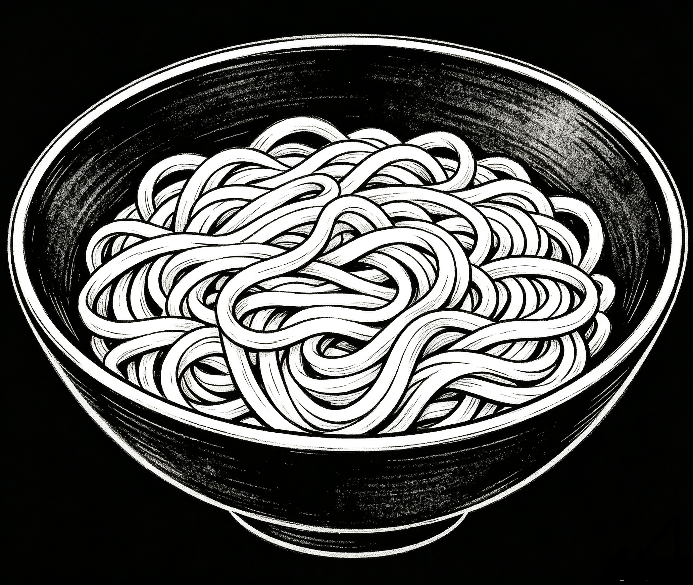

My dad was born in 1969. When he was a kid, there was a radio at home, and they listened to it every day. When he told me about this, he used a word that I didn’t understand at first.
He said: That radio was cuán(攒) by your grandfather.
I didn’t get it. I thought he meant saving up money for a long time to buy it. So I said,
Wow, you must have saved for a long time.
My dad paused for a second, then laughed, and said,
No, it wasn’t bought. Your grandfather put it together himself from spare parts – that’s what cuán (assembled) means.
Nobody uses that word anymore, because now you can buy anything with your phone.
He said my grandfather was an electrician, and the house was never short of screwdrivers, soldering irons, rosin, or solder. That radio was built bit by bit after work, at the dinner table, under a dim light. The wooden case was nailed together by hand; the speaker was salvaged from some scrapped machine; and the tuning knob made a creaking sound when you turned it.
But that very radio became a kind of
holy place
for all the neighborhood kids.
-2-
In the late 1970s, my dad was in elementary school. Every day from 12:00 to 12:30, the radio broadcast a serialized storytelling program called The Story of Yue Fei. (Yue Fei was a famous military general of the Southern Song Dynasty and is revered as a national hero in China for his resistance against invaders).
The storyteller was a woman named Liu Lanfang. My dad said her voice was powerful – the moment she opened her mouth, it felt like thousands of horses and soldiers were charging.
Ten minutes before noon, the classroom would already get restless. Before the teacher even dismissed the class, they had already gripped their schoolbag straps under the desks. As soon as the bell rang, they slung their bags over their shoulders and dashed out. They couldn’t waste a single minute, or they’d miss the start.
They didn’t go to their own homes. They all ran to my dad’s house.
Because my grandfather had a hand-assembled radio –
and no one else did.
My dad said the main room wasn’t big - just a square table and a few wooden benches. If there wasn’t room to sit, they stood. At lunchtime, his mother would just have pulled the noodles out of the pot when a bunch of boys burst in. They set their bowls on the table, put down their chopsticks, and no one touched the food.
The room fell silent except for the faint electrical hum coming from under that white plastic knob


and then Liu Lanfang slapped her storytelling block:
Pah!
Every kid in the room froze as if struck by magic. Names like Yue Fei, Jin Wuzhu, and Niu Gao leaped out of that old paper-cone speaker and landed straight into the hearts of all those half-grown boys.
Often, the noodles would go cold and sticky.
No one remembered to eat.

At 12:30 sharp, the block slapped again
Pah!
and that was it for the day. Only then did the tension in the room relax. Then, as if suddenly remembering they had afternoon classes, they all jumped up and ran out.
My dad said he once lost a shoe during that mad dash. He didn’t dare stop to pick it up, afraid of being late. He only went back after school – the shoe was still lying in the ditch by the roadside.
-3-
The real highlight came in the evening. As dust fell, the same boys would gather on an empty patch of ground and start imitating the voices and movements of the characters from the storytelling.
Nobody organized it – they just came together naturally.
The one who mimicked the best would stand on a mound of dirt, holding a firewood stick like a spear, his eyes gazing into the dark fields in the distance. The others would gather around him, and at that moment,
he was the greatest hero of the entire nation.
A half-hour story could fill his entire day with anticipation.
-4-
Later,
the family got a television, then a VCR, and eventually my dad got his own mobile phone. He said now you can open your phone and listen to Liu Lanfang anytime, anywhere – but he tried it once and turned it off after a few minutes.
The voice was still the same, even clearer now,
but something felt missing.
I asked him what was missing. He thought for a moment, and said,
It’s missing that
feeling of a roomful of people holding bowls of sticky noodles
and not daring to breathe.
